flowchart LR A[User] --> B((Internet)) B --> C[Servise] C --> D((Network)) D --> E[(Storage)] style A fill:#5cb85c style B fill:#5bc0de style C fill:#d9534f style D fill:#5bc0de style E fill:#428bca
Збір вимог та оцінка навантаження
Конструювання програмного забезпечення
Ігор Мірошниченко
КНУ імені Тараса Шевченка, ФІТ
Про мене
- Мірошниченко Ігор Вікторович
- кандидат економічних наук, доцент
- доцент кафедри технологій управління, ФІТ, КНУ імені Тараса Шевченка
- викладач Міжнародного інституту бізнесу (MBA)
ihor.miroshnychenko@kneu.ua
DataCamp Group
DataCamp Group


DataCamp Group

Як долучитися?
- Приєднатися до телеграм-каналу Data Mirosh
- Зареєструйтесь на DataCamp
- Приєднайтесь до класу за посиланням
Примітка
Клас буде активний з 11 жовтня 2023 року до 11 квітня 2023 року, після чого буде буде відкрито наступний потік. Слідкуйте за оновленнями.
Збір вимог до системи
Збір вимог до системи
Оскільки задача проєктування систем майже завжди формується у відкритій формі, нам потрібно окреслити функціонал та визначити вимоги до системи.
Слід почати з пошуку відповідей на наступні питання:
- Функціональні вимоги: які основні можливості дає система користувачам?
- Нефункціональні вимоги: наскільки надійною та швидкою має бути система?
- Обмеження функціоналу: які обмеження на функціонал системи накладаються зовнішніми факторами?
Функціональні вимоги
Функціональні вимоги
Функціональні вимоги - це можливості, які система надає користувачеві.
Наприклад, для соціальних мереж це:
- додавання в друзі;
- спілкування між користувачами;
- створення пабліків.
Для цього варто виписати найвідоміші властивості системи в порядку важливості та вказати, над якими ми плануємо сконцентруватися надалі.
Приклад соціальних мереж
- Створення профілю (додавання опису і фото)
Приклад соціальних мереж
Потім, залежно від спрямованості соціальної мережі, можемо представити такі функції, як:
- створення контенту (публікації, фото, відео, історії)
- відстеження контенту (по користувачам чи тегам?)
- додавання контактів з мережі (номер телефону?)
- спілкування зі своїми контактами (текстові повідомлення, відео-дзвінки, голосові повідомлення?)
Приклад соціальних мереж
Якісь соцмережі можуть підтримувати всі напрямки і додаткові можливості, на кшталт додавання геотегів, пошуку контенту, рекомендацій тощо.
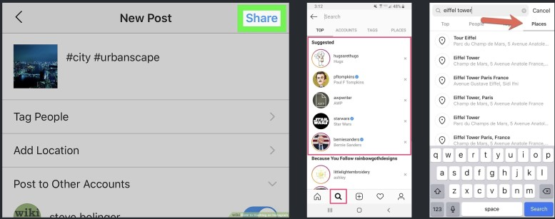Функціональні вимоги
Основні думки для створення соціальної мережі
Має сенс вибрати той функціонал, на якому зупинимося:
- створення профілю з юзернеймом;
- створення тільки текстових постів;
- підписка на пости інших користувачів.
А інші можливості згадати, але винести за рамки проектованої версії:
- додавання контактів за номером телефону;
- спілкування зі своїми контактами з відеодзвінками;
- додавання тегів і геоміток до постів;
- повнотекстовий пошук контенту;
- відображення постів від користувачів поблизу та ін.
Нефункціональні вимоги
Нефункціональні вимоги
Нефункціональні вимоги - це те, як має поводитися система в роботі.
Типові запитання, на які хочемо відповісти:
- Чи має система бути абсолютно надійною або якісь дані можуть загубитися?
- Що нам важливіше - швидка відповідь системи чи гарантія врахування останніх змін?
- З якою затримкою можуть застосовуватися внесені нами зміни?
- З якою затримкою відображаються запитувані дані?
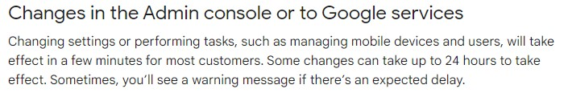
Нефункціональні вимоги
На перший погляд всі ці питання можуть виглядати дивними — чому б не зробити систему якомога швидшою та надійнішою? Але відповіді на них допоможуть нам зрозуміти, які компроміси ми готові робити.
Наприклад, CAP-теорема говорить, що система не може одночасно бути:
- Consistent (консистентною),
- Available (доступною)
- Partition-tolerant (стійкою до розбиття на частини).
Тому в залежності від вимог до системи ми можемо вибрати, які з цих властивостей нам важливіші.
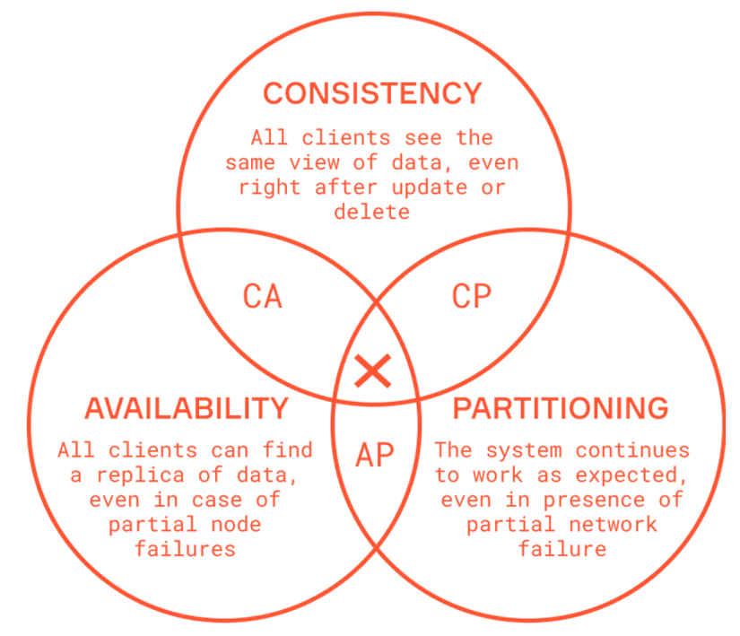
Нефункціональні вимоги
Для соціальної мережі важливо, щоб вона завжди була доступною.
Соціальна мережа також розділена, маючи користувачів по всьому світу (і сервери, відповідно).
Однак, якщо користувач публікує пост, можливо, ми не одразу його побачимо.
Нічого страшного, якщо станеться затримка, рано чи пізно він все одно стане доступним для всіх користувачів. Тобто, консистентність не така критична.
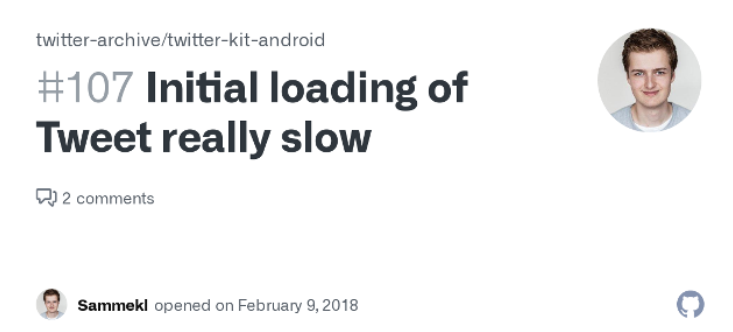Нефункціональні вимоги
У випадку з банківським додатком успішно проведена грошова транзакція повинна означати надходження і видимість коштів на рахунку адресата, ніяк інакше.
Ціною цьому може бути недоступність застосунку якийсь час.
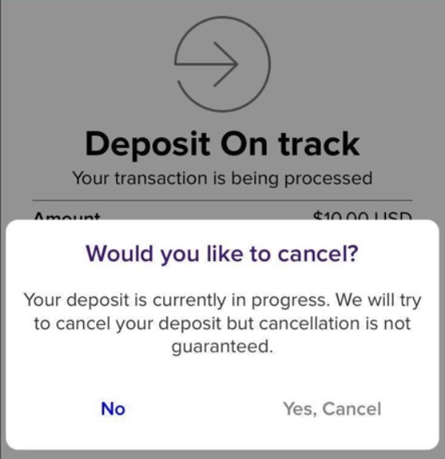Приклади
Cервіс коротких посилань
Навіщо потрібен такий сервіс?
Щоб перетворювати довгі посилання на короткі, зручні для обміну.

Cервіс коротких посилань
Функціональні вимоги:
- користувач може ввести довге посилання та отримати коротке;
- коли користувач переходить по короткому посиланню, він перенаправляється на вихідне посилання.
- користувач може вибрати коротке посилання самостійно.
- посилання “протухає” через певний час.
Нефункціональні вимоги:
- система повинна бути доступною.
- перенаправлення з мінімальною затримкою.
- коротке посилання має бути унікальним.
- коротке посилання має бути випадковим, щоб його не було легко підібрати.
Бонус: збір аналітики, API для розробників.
Хостінг текстів
Навіщо потрібен такий сервіс?
Щоб ділитися кодом і шукати в ньому помилки разом.
Хостінг текстів
Функціональні вимоги:
- Користувач може ввести текст і отримати посилання на нього.
- Підсвічування тексту.
- Посилання “протухають” через певний час.
- Можливість редагування тексту.
Нефункціональні вимоги:
- Висока надійність сервісу - завантажені дані не повинні зникати.
- Висока доступність сервісу - інакше доступ до потрібних даних пропадає.
- Збережені тексти повинні відображатися з мінімальною затримкою.
- Короткі посилання мають бути випадкові настільки, щоб їх не можна було підібрати.
Автодоповнення
Навіщо потрібен такий сервіс?
Щоб при введенні перших букв запиту пропонувалися варіанти доповнення.
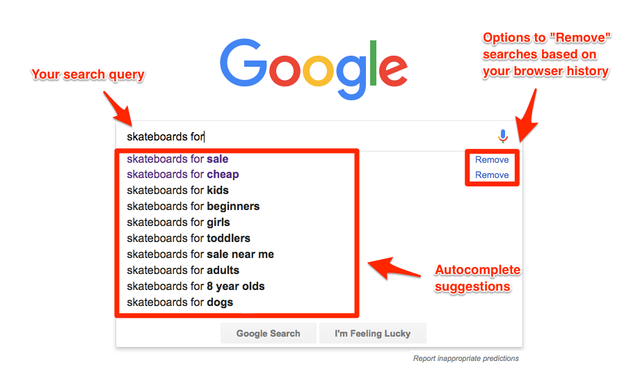Автодоповнення
Функціональні вимоги:
- Користувач може ввести початок запиту і отримати список варіантів доповнення.
- Варіанти оновлюються по мірі введення користувачем тексту.
Нефункціональні вимоги:
- Висока швидкість відображення варіантів доповнення.
Бонус: враховувати минулу історію запитів, профіль користувача, контекст тощо.
Хмарний диск
Навіщо потрібен такий сервіс?
Щоб зберігати файли в хмарі та мати до них доступ з різних пристроїв.
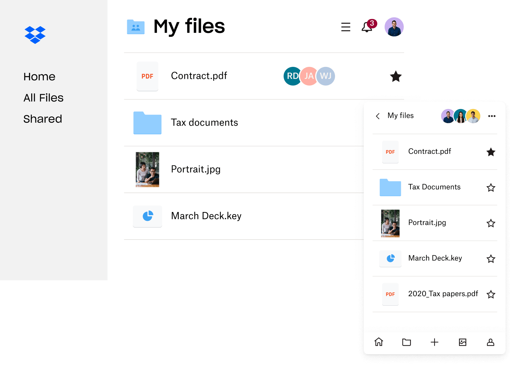
Хмарний диск
Функціональні вимоги:
- Користувач може завантажити та вивантажити файли з гаджетів.
- Користувач може ділитися файлами з іншими користувачами.
- Автоматична синхронізація між пристроями.
- Можна редагувати файл офлайн, синхронізація відбувається після підключення до мережі.
Нефункціональні вимоги:
- (A) Атомарність - файл або оновлюється, або ні, але не стає “битим”.
- (C) Консистентність - за будь-якого сценарію роботи дані в хмарі завжди валідні.
- (I) Ізоляція - можна правити різні файли з різних пристроїв, все буде добре.
- (D) Стійкість - після зеленої галочки на файлі каву вже можна виливати на ноутбук.
Навіщо потрібен такий сервіс?
Щоб ділитися фотографіями їжі та себе у дзеркалі.

Функціональні вимоги:
- Користувачі можуть завантажувати та переглядати фотографії.
- Користувачі можуть шукати інші фотографії за описом.
- Користувачі можуть підписуватися на фотографії один одного.
- Є стрічка з популярних фото всіх відстежуваних користувачів
Нефункціональні вимоги:
- Висока доступність сервісу - інакше користувачі перейдуть у Snapchat або TikTok.
- Стрічка з фотографіями повинна відображатися за сотні мілісекунд (інакше див. п. 1).
- Консистентність не така критична - підписники скількись потерплять без ваших селфі.
- Висока надійність сервісу - жодне селфі або фото їжі не повинно загубитися.
Telegram
Навіщо потрібен такий сервіс?
Щоб від спілкування Вас відволікали роботою.
Telegram
Функціональні вимоги:
- Користувачі можуть відправляти один одному повідомлення.
- Користувачі можуть створювати канали для розсилки повідомлень.
- Користувачі можуть відправляти один одному файли.
Нефункціональні вимоги:
- Спілкування відбувається в реальному часі з мінімальними затримками.
- Консистентність — однакові повідомлення відображаються у всіх чатах.
- Висока надійність — повідомлення не повинні загубитися.
- Висока доступність — інакше користувачі перейдуть у Viber або WhatsApp.
Бонус: стікери, групові чати, сторіз 🙈, тощо
Навіщо потрібен такий сервіс?
Щоб почитати чергову маячню Маска і що з цього приводу думає цивілізований світ.
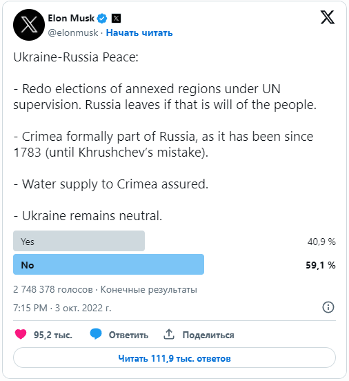
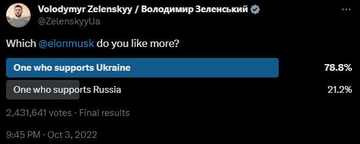
Функціональні вимоги:
- Користувачі можуть додавати короткі пости.
- Пости можуть містити фото або відео.
- Користувачі можуть відстежувати пости інших.
- Є стрічка з твітів усіх відстежуваних користувачів.
Нефункціональні вимоги:
- Висока доступність сервісу - інакше користувачі повернуться в живий журнал.
- Стрічка з твітами має відображатися за сотні мілісекунд (інакше див. п. 1).
- Консистентність не така критична - підписники трошки потерплять без ваших думок.
Бонус: пошук, реплаї, гарячі теми, повідомлення, рекомендації, аватарки з NFT мавпами.
Netflix
Навіщо потрібен такий сервіс?
Щоб подивитися Гаррі Поттера перед Різдвом.
Netflix
Функціональні вимоги:
- Користувачі можуть переглядати фільми та серіали.
- Користувачі можуть шукати контент за назвою.
- Сервіс відстежує оцінки та статистику переглядів.
- Користувачам рекомендуються нові фільми та серіали
Нефункціональні вимоги:
- Висока доступність сервісу - інакше користувачі будуть дивитися котиків у конкурентів.
- Висока чуйність сервісу - відео повинні програватися без підвисань.
- Консистентність не така критична - після тижневого очікування одна хвилина непомітна.
Бонус: жанри, популярне, вибране, списки на подивитися потім.
Пошук ресторанів
Навіщо потрібен такий сервіс?
Щоб не їсти їжу з жовтих сумок.
Пошук ресторанів
Функціональні вимоги:
- Користувачі можуть знаходити відповідні заклади поблизу.
- Користувачі можуть додавати/оновлювати/видаляти заклади.
- Користувачі можуть залишати відгуки до відвіданих місць із фото та оцінками
Нефункціональні вимоги:
- Пошук має відбуватися швидко, інакше користувач замовить доставку.
- Набагато більше навантаження очікується на підсервіс пошуку, ніж на редагування.
Бонус: фільтри за категоріями, рекомендації нових закладів.
Пошук таксі
Навіщо потрібен такий сервіс?
Щоб не їздити на маршрутках.
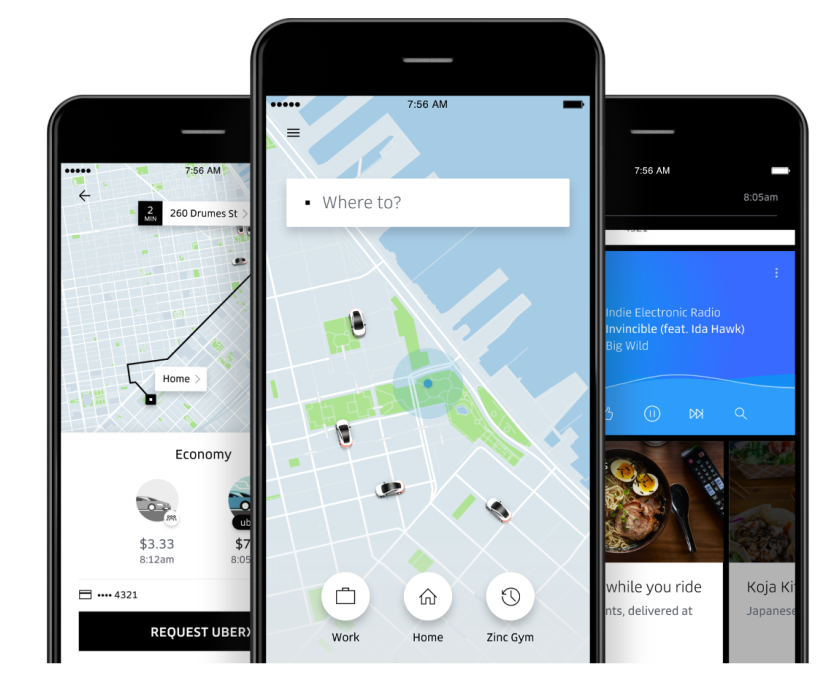Пошук таксі
Функціональні вимоги:
- Водії можуть виходити на зміну і чекати на замовлення.
- Пасажири можуть знаходити водіїв поблизу.
- Пасажири можуть замовляти поїздку, для неї знаходиться водій.
- Позиції відстежуються з моменту прийняття поїздки і до її закінчення. В кінці поїздки водій продовжує зміну.
Нефункціональні вимоги:
- Висока доступність сервісу - інакше пасажири поїдуть на метро, а водії на вокзал.
- Низький час очікування для пасажира, маленький простій для водія.
Бонус: оцінки водіям, оцінки пасажирам, пояснення ціноутворення.
Розрахунок навантаження на систему
Загальні відомості
Після збору первинних вимог до системи дуже важливо оцінити необхідну інфраструктуру для розгортання і підтримки системи, а також вартість усього обладнання і процесів.
Від того, наскільки точно зробити розрахунок, залежатиме успіх проєкту і його життєздатність, а найголовніше - чи вистачить у замовника матеріальних ресурсів, щоб втілити всі сформульовані побажання і вимоги до системи.
Оцінка дасть змогу скоригувати очікування від продукту.
Розрахунок навантаження на систему
На цій стадії проєктування ми оцінюємо з різних сторін яке навантаження може бути на систему.
Чи є якісь перекоси у бік читання або запису і яке залізо або інтернет-канал може знадобитися для передачі необхідної кількості даних.
З яких складових складається загальне навантаження?
Основні метрики розрахунку
- Трафік користувачів
- Мережеве навантаження
- Обчислювальне навантаження
- Навантаження на сховище
Трафік користувачів
Щоб розрахувати необхідний обсяг трафіку, потрібно оцінити потенційну аудиторію системи та підрахувати загальну кількість користувачів.
Якщо це якась закрита система для внутрішнього користування організації - кількість користувачів, виходячи з поточного штатного розкладу, обов’язків співробітників. Також можна закласти відсоток розширення персоналу, щоб врахувати приріст користувачів у майбутньому.
Якщо майбутня система це загальнодоступний ресурс - соціальна мережа або інший сервіс, тоді для приблизної оцінки можна проаналізувати метрики найближчих конкурентів.
Виходячи з кількості потенційних користувачів, далі можна оцінити час роботи користувачів у системі на день/місяць, оцінити обсяг контенту, що генерується і споживається під час роботи, а також обсяг місця на жорстких дисках під зберігання цього контенту.
Трафік користувачів
Джентльменський набір користувацьких метрик:
- Кількість активних користувачів в місяць (Monthly Active Users, MAU)
- Кількість активних користувачів в день (Daily Active Users, DAU)
- Загальна кількість користувачів на заданому горизонті (наприклад, 5 років)
- Скільки та якого контенту у середньому створює один користувач на день
Від бізнес-показників до оцінки навантаження:
- Яка максимальна кількість запитів в секунду (RPS) буде до складових системи?
- Яку кількість одночасних з’єднань (CCU) необхідно буде утримувати?
- Яким буде навантаження на мережевий канал і який обсяг трафіку ми використаємо?
- Яким буде приріст необхідного місця на жорстких дисках та скільки даних ми набереться?
- Які будуть витрати на інфраструктуру?*
Мережеве навантаження
Мережеве навантаження складається з утримуваних з’єднань в одну одиницю часу і загального обсягу трафіку, який може пройти через мережу за одиницю часу.
Обмеження
Мережеве навантаження
З мережевого навантаження на сервіс можна вивести загальну вартість трафіку.
Хмарні провайдери, наприклад, оцінюють 1Gb трафіку в місяць в середньому від $0.01 до $0.1.
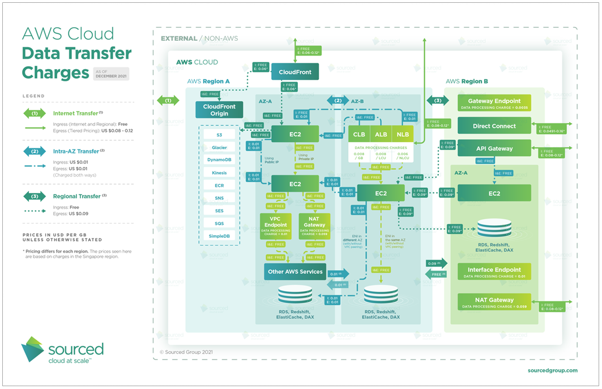Обчислювальне навантаження
Під обчислювальним навантаженням зазвичай мається на увазі обчислення кількості одночасних запитів користувачів до сервісу. Цей показник обчислюється в RPS (requests per second).
Залежно від операції, з якою користувач звертається до сервісу, обчислювальне навантаження помітно різниться, тому показники рахують для групи операцій, наприклад, окремо для операції на отримання текстових даних, окремо для читання з БД і окремо для запису в БД.
Обчислювальне навантаження на старті, звісно, оцінити найскладніше.
Обчислювальне навантаження
Природним чином воно залежатиме від складності створюваної нами системи. Але на якийсь порядок цифр для простих сценаріїв можна орієнтуватися за бенчмарками TechEmpower Web Framework Benchmarks
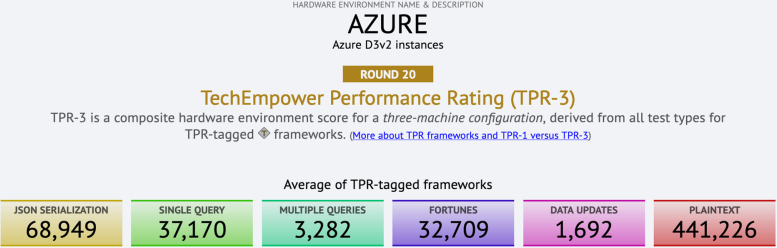За грубою оцінкою можна виходити з того, що в простих сценаріях у хмарі ми зможемо витримувати навантаження в 100k RPS для текстових даних і 10k RPS і 1k RPS під час читання і запису в БД.
Обчислювальне навантаження
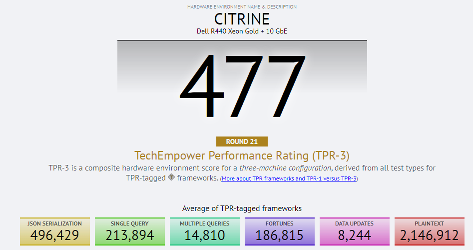За наявності потужних фізичних серверів у тих самих сценаріях можна прикидати ймовірне навантаження в 500k RPS для текстових даних і 50k RPS і 5k RPS під час читання і запису в БД.
Реальні характеристики системи, звісно ж, виявлятимуться вже під час тестувань
Навантаження на сховище
Оцінивши кількість створюваного контенту з боку користувачів, ми можемо прикинути скільки місця він займатиме, який постійний приріст при цьому очікується і, відповідно, скільки того чи іншого заліза нам знадобиться для нашої системи.
Найпоширеніші види сховищ і значення показників їхньої швидкості обробки даних, а також вартість зберігання даних:
- HDD зі швидкістю 100-300 МБ/с, кожен диск зберігає до 20 ТБ за ціною до $500.
- NVMe SSD зі швидкістю 3-5 ГБ/с, кожен диск зберігає до 8 ТБ за ціною до $2000.
- Оперативна пам’ять (RAM) зі швидкістю 50 ГБ/с, вартість планки 128 ГБ близько $1000.
Навантаження на сховище
Найпоширеніші види сховищ і значення показників їхньої швидкості обробки даних, а також вартість зберігання даних:
- HDD зі швидкістю 100-300 МБ/с, кожен диск зберігає до 20 ТБ за ціною до $500.
- NVMe SSD зі швидкістю 3-5 ГБ/с, кожен диск зберігає до 8 ТБ за ціною до $2000.
- Оперативна пам’ять (RAM) зі швидкістю 50 ГБ/с, вартість планки 128 ГБ близько $1000.
У середньому зберігання 1 ТБ обійдеться приблизно в $10000 в RAM, $300 на SSD і $30 на HDD.
Можна прикидати, що в одному сервері буде до 1 ТБ RAM, 50 ТБ SSD або 200ТБ HDD.
Якщо дисків багато, у гру вступає і середня кількість відмов за рік (AFR) у розмірі 1%.
Ще про продуктивність
Один з важливих факторів для системи — це час/затримка відповіді або latency.
В деяких сценаріях вона буде визначатися швидкістю мережі/диску, але можуть бути й інші причини.
У 2011 році відомий інженер Jeff Dean з Google опублікував статтю зі своїми спостереженнями щодо часу виконання різних операцій на різних пристроях:
- Звернення до кешу L1
0.5 ns - Неправильне передбачення гілки
5 ns - Звернення до кешу L2
7 ns - Блокування/розблокування mutex
100 ns - Звернення до основної пам’яті
100 ns - Стиснення 1K байт за допомогою zip за
10 000 ns - Передача 2K байт через мережу 1 Гбіт/с
20 000 ns - Послідовне читання 1 МБ з пам’яті
250 000 ns - Передача туди і назад в межах одного центру обробки даних
500 000 ns - Пошук диска
10 000 000 ns - Послідовне читання 1 МБ з мережі
10 000 000 ns - Послідовне читання 1 МБ з диска 3
0 000 000 ns - Відправлення пакету Каліфорнія->Нідерланди->Каліфорнія
150,000,000 ns
Примітка
- 1 ns = \(10^{-9}\) сек
- 1 us = \(10^{-6}\) сек = 1,000 ns
- 1 ms = \(10^{-3}\) сек = 1,000 us = 1,000,000 ns
Ще про продуктивність
Те саме, але графічно:

Ще про продуктивність
На які показники варто орієнтуватися під час розрахунків навантаження на систему:
- Трафік: MAU, DAU, приріст контенту на день, загалом за 5 років, співвідношення R/W.
- Мережа: C10k давно не питання, 1 Gbps навіть у хмарі, платимо не більше ніж $0.1/GB.
- Обчислення: віддаємо 100к тексту, зчитуємо 10к і записуємо 1к простих запитів у БД.
- Сховище: HDD 300 MB/s і $30/TB, SSD 5 GB/s і $300/TB, RAM 50GB/s і $10000/TB.
В одну машину можна поставити 1 TB RAM, 50 TB SSD або 200 TB HDD.
Приклади розрахунків
Приклад 1: сервіс коротких посилань
Робимо оцінки виходячи з припущень:
- 100М скорочень щомісячно (MAU 10M, DAU 1M, 3 скорочення у середньому).
- Співвідношення читання до запису 100:1.
Звернень до сервісу в місяць: 100 * 100М = 10Млрд.
Навантаження на створення записів: 100М / (30 * 86400) ≈ 40 RPS. На читання: x100 = 4K RPS.
Якщо кожен запис займає 1 КБ, ми будемо генерувати трафік у 32 Мбит/сек1.
На горизонті 5 років ми будемо зберігати 100М * 5 * 12 = 6Млрд записів або 6 ТБ даних.
У підсумку, для таких користувачів достатньо і однієї робочої станції за декілька тисяч доларів.
Приклад 2: хостінг текстів
Робимо оцінки виходячи з припущень:
- 1М завантажень в день (MAU 10M, DAU 500K, 2 завантаження у середньому).
- Співвідношення читання до запису 10:1.
Звернень до сервісу в місяць: 30 * 10 * 1М = 300 млн.
Навантаження на створення записів: 1М / (86400) ≈ 12 RPS. На читання: x10 = 120 RPS.
Якщо кожен запис займає 10 КБ, ми будемо генерувати трафік у 10 Мбит/сек.
На горизонті 5 років ми будемо зберігати 30М * 5 * 12 = 1.8 Млрд записів або 18 ТБ даних.
У підсумку, для таких користувачів достатньо і однієї робочої станції за декілька тисяч доларів.
Приклад 3: автодоповнення
Робимо оцінки виходячи з припущень:
- 1 млрд. звернень до сервісу в день.
- 10 млн. унікальних запитів покриває більшу частину звернень.
- Запити складаються в середньому не більше ніж з 5 слів до 10 символів кожне.
Маємо: 50 символів на запит в середньому, тобто в 200 байт точно поміститься.
Всього на збереження всіх запитів за день піде: 10 млн. * 200 байт = 2 ГБ.
Якщо припустити, що кожен день з’являється 5% нових унікальних запитів, то на горизонті 5 років ми будемо зберігати індекс розміром 2 ГБ * 365 * 5 * 1.05 = 3.8 ТБ.
У підсумку, для таких користувачів достатньо і однієї робочої станції за декілька тисяч доларів.
Приклад 4: хмарний диск
Робимо оцінки виходячи з припущень:
- 1 млрд. користувачів всього, 100 млн. DAU.
- У користувачів в середньому 5 гаджетів.
- У кожного користувача в середньому 100 файлів по 100 кБ, активні змінюють 1 файл.
Мережа: на оновлення 100 млн. * 100 кБ = 10 ТБ трафіку в день, 10 ТБ * 86 400 сек ≈ 1 Gbps, 1 Gbps * ≈ 2 тис. днів ≈ 20 PB за 5 років, відкрито 10 тис. з’єднань.
Обчислення: необхідно писати 100 млн. записів в день = 1 тис. RPS з записами до БД.
Сховище: всього зберігаємо 1 млрд. * 100 * 100 кБ = 10 PB, тобто 50 серверів з 200 TB HDD кожен.
Вартість: 20 PB трафіку обійдеться у $2 млн., на зберігання 10 PB HDD потрібно $300 тис.
На датаноди нам знадобиться до 100 серверів, з’єднання і трафік витримає і один сервер, але краще більше.
Підтримка всій системи обійдеться в декілька млн. доларів на горизонті 5 років.
Приклад 5: Instagram
Робимо оцінки виходячи з припущень:
- 1 млрд. користувачів всього, 100 млн. DAU.
- Користувач завантажує по одному фото в день розміром 100 кБ.
- Перегляди і завантаження співвідносяться 100:1.
Мережа: - завантаження фото 100 млн. / 100 тис. = 1 тис. RPS, 1 тис. * 100 кБ = 1 Gbps і ≈ 200 PB за 5 років - читання 100 тис. RPS / 100 Gbps, С100k
Обчислення: 1 тис. RPS на запис фото, 100 тис. RPS на читання
Сховище: всього зберігаємо 20 PB фото, тобто 100 серверів з 200 TB HDD кожен.
Вартість: 200 PB трафіку обійдеться у $2 млн., на зберігання 20 PB HDD потрібно $600 тис.
На датаноди нам знадобиться до 100 серверів, з’єднання з трафіком та читання БД треба ще десятки.
Підтримка всій системи обійдеться в декілька млн. доларів на горизонті 5 років.
Приклад 5: Telegram
Робимо оцінки виходячи з припущень:
- 100 млн. DAU.
- Кожен користувач відправляє до 100 повідомлень в день, кожне 1 кБ.
- Кожне повідомлення читається 10 разів (приватні + групи).
Мережа: - завантаження повідомлень 100 млн. * 100 / 86400 ≈ 100 тис. RPS, 100 тис. * 1 кБ = 1 Gbps і ≈ 200 PB за 5 років - читання 1 млн. RPS / 100 Gbps, С1М
Обчислення: 100 тис. RPS на запис повідомлень, 1 млн. RPS на читання
Сховище: всього зберігаємо 20 PB повідомлень, тобто 100 серверів з 200 TB HDD кожен.
Вартість: 200 PB трафіку обійдеться у $2 млн., на зберігання 20 PB HDD потрібно $600 тис.
На датаноди нам знадобиться сотні серверів і для датанод, і дня підтримки з’єднань, і для записів в БД.
Підтримка всій системи обійдеться в декілька млн. доларів на горизонті 5 років.
Приклад 5: Twitter
Робимо оцінки виходячи з припущень:
- 100 млн. DAU.
- Кожен користувач відправляє 1 повідомлення в день, кожне 100 кБ.
- Кожен користувач переглядає стрічку 10 користувачів.
- Читання та запис відбувається в пропорції 100:1.
Мережа: - завантаження повідомлень 100 млн. * 1 / 86400 ≈ 1 тис. RPS, 1 тис. * 100 кБ = 100 Mbps і ≈ 2 PB за 5 років - читання 1 тис. RPS / 1 Gbps, С10k
Обчислення: 1 тис. RPS на запис повідомлень, 10 тис. RPS на читання + JOIN та алгоритмічна стрічка.
Сховище: всього зберігаємо 2 PB повідомлень, тобто 10 серверів з 200 TB HDD кожен.
Вартість: 2 PB трафіку обійдеться у $200 тис., на зберігання 2 PB HDD потрібно $60 тис.
На датаноди нам знадобиться десятки серверів + сервери для обчислень і допоміжні сервери.
Підтримка всій системи обійдеться в межах 1 млн. доларів на горизонті 5 років.
Приклад 5: Netflix
Робимо оцінки виходячи з припущень:
- 10 млн. DAU, 20 000 фільмів у бібліотеці.
- Кожен користувач дивиться 1 годину контенту.
- Навантаження зі сторони контент-мейкерів поки пропускаємо.
Мережа: відео 1080p займає 5 MBps, трафік 10 млн. * 4000 * 5 MBps = 20 Pbps (20 000 000 Gbps 😧).
Обчислення: 10 млн. * 10 переглядів / 100 000 сек. = 1 тис. RPS на отримання метаданих між серіями.
Сховище: 20 000 найменувань по 10 годин (фільми, але і серіали) 20 тис. * 10 * 4000 * 10 Mbps ≈ 1 EB = 1 млн. TB.
Вартість: На сховище необхідно витратити десятки мільйонів доларів, на мережу — мільярди 😮.
За трафік по стандартному прайсу розплатитися неможливо, тому Netflix має власні CDN (мережі дистрибуції контенту).
Дякую за увагу!
ihor.miroshnychenko@kneu.ua